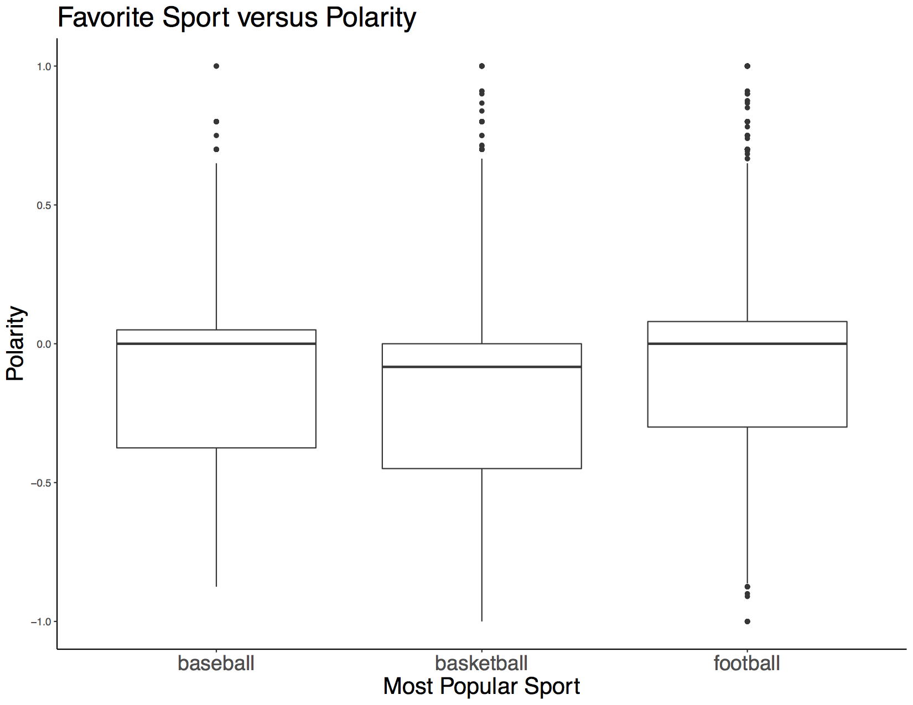
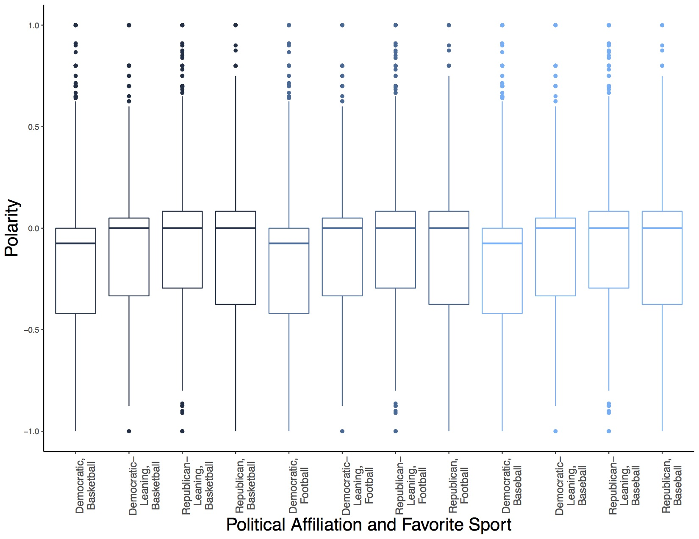
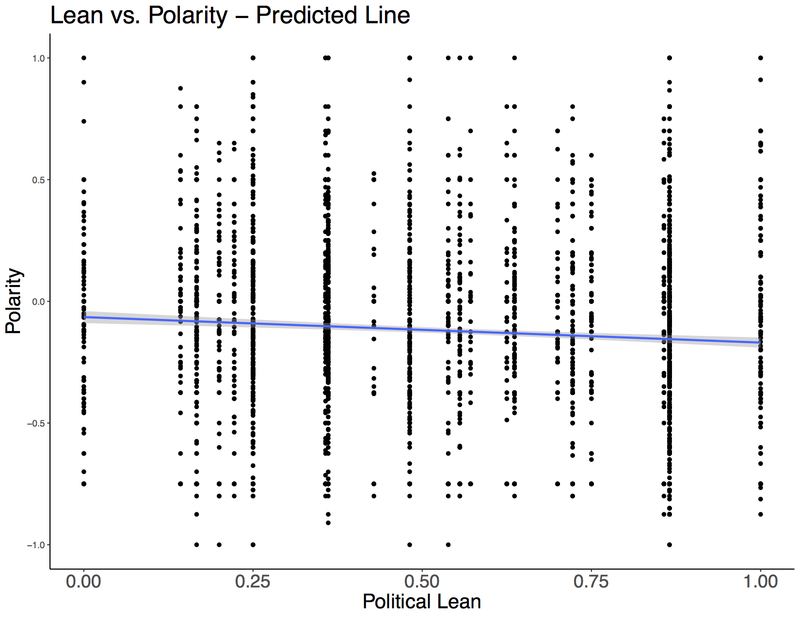
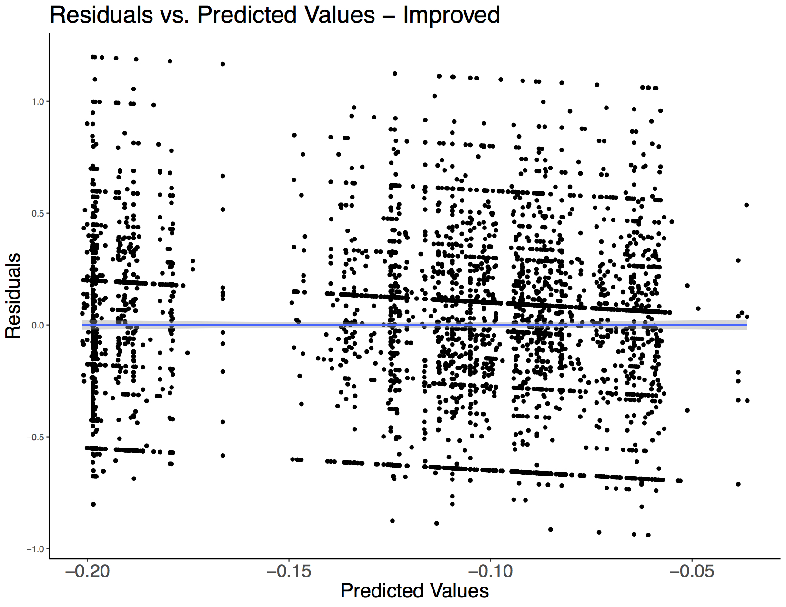
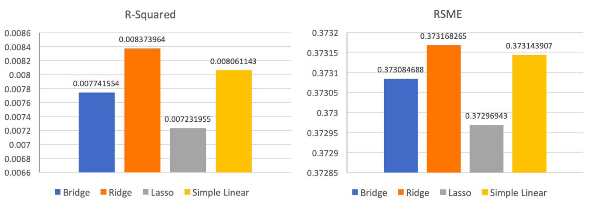

Support for Paying College Athletes Uncorrelated with Political Affiliation or Favorite Sport
Through twitter data analysis of tweets regarding California's 'Fair Pay to Play Act', we have found
that there is no defined relationship between attitude
towards the idea of paying college athletes and political affiliation. However, when you look at a
state's political affiliation and most popular sport, we can see that Democratic states whose
favorite sport is basketball have the most negative attitudes towards the topic.
The Problem
For this project, we decided to look at the way people in different regions have talked about the idea of college athletes getting paid.
Earlier in November, California governor Gavin Newsom approved a bill titled the 'Fair Pay to Play Act'
that would allow college athletes to benefit from their
"name, likeness, and image." This is very controversial as it monetizes college athletics.
Certain states in the US are known to be 'Republican' or 'Democratic' based on their political affiliation.
We want to investigate how Twitter users have talked about college athletes getting paid compared to where they live and see
if there is a relationship between political lean and opinion about college athletes being compensated.
The Data
In order to get our dataset of tweets about this topic, we filtered through about 3 billion tweets that have been sent out from October
2017 to November 2019 using keywords and phrases related to the topic of paying college athletes such as "paying college athletes" and
"college athlete endorsement," with many more keywords and phrases ['ncaa paying','college athlete paid','athlete compensation','pay athlete','paying athlete',
'paying players','pay players','college endorsement','benefit from their name',
'athletic sponsorship','pay student athletes','pay student-athletes','paying student athletes',
,'paying student-athletes','student athlete market','student-athlete market','college athlete endorsement',
'ncaa endorsement','ncaa pay','paying student athlete','pay student-athlete','paying student-athlete','pay student athlete','athlete endorsement deal',
'paying college athletes','paying college athlete','name, likeness, and image', '#payforplay #ncaa', '#ncaa #payforplay',
'paying collegiate athletes', '#ncaa #paytoplay', '#paytoplay #ncaa','fair pay to play','signs sb206','sign sb206','paid student athlete','paying collegiate athlete', 'college athletes to profit', 'compensation for name and likeness',
'pay to play bill', 'pay to play act', 'pay-to-play bill', 'pay-to-play act', 'pay for play bill', 'pay for play act', 'pay ncaa athletes',
'paying ncaa athletes', 'college athletes to hire agents', 'ncaa athletes to hire agents', 'college athletes to hire an agent', 'ncaa athletes to hire an agent',
'college athletes to be paid', 'college players monetizing'] in various wordings and verbages, resulting in
only 11,545 tweets. In order to gather our data from twitter, we created a python script to pull the data from the server,
using these keywords. In order to lower our number of needed keywords, and we changed all characters to lowercase in order to
generalize the keywords even further.
Here is an example of a tweet with positive sentiment: "really happy that college athletes are going to rightfully profit from their name, image and likeness. that's great"
Here is an example of a tweet with negative sentiment: "pay for college athletes is a bad idea! they're there to learn not make a living! make a living after you learn"
The Figures
Our first graph shows how often this issue has been talked about over the last few years. You can see that the frequency of this topic
has increased over time with a large spike in October of 2019, the month when Gavin Newsom approved the California bill. There are also
bumps around March of 2018 and 2019, most likely because of March Madness, the NCAA Men's College Basketball Tournament that likely spurred
conversation about paying athletes because many NCAA basketball players COULD go into the NBA before they graduate and start making money. Many
enter too early.

This next graph shows WHERE the tweets were sent out across the United States. From this graph, you can see that tweets about this
topic are fairly spread out across the United States, with clumps around major US cities such as San Francisco, Los Angeles, and New York City.
Negative tweets (a polarity less than 0) are red, neutral tweets (a polarity of 0) are green, and positive tweets (a polarity greater than 0) are blue.
There is some slight overlay, making it appear that neutral tweets are the most prevalent. However, there were about the same
number of negative tweets as there were neutral and positive tweets combined.

This graph shows the average polarity across the years regarding tweets about the issue.
As you can see, on average, people feel more negatively about the topic overall, as the highest
point on this graph is a polarity of about -0.05. However, there is an upward trend which shows
that people may be warming up to the idea of paying college athletes afterall. The drop in the
graph around November could show that when the idea is actually brought up in a governmental sense,
which is what happened when Newsom approved the California bill, people have changed their minds
when it becomes a real possibility for college athletes to get paid.

This graph shows political affiliation (based on where the tweet was sent from) compared to the polarity
of the tweet. We defined political affiliation as the number of Democratic House Representatives in that state
compared to the number of Republican House Representatives in that stateFrom this website:
https://en.wikipedia.org/wiki/List_of_current_members_of_the_United_States_House_of_Representatives , we got the
number of Democratic representatives and divided that by the total number of representatives for that state. this
was done using the chrome add-on SelectorGadget and manipulation of that data in R.
An affiliation greater than 0.75
indicates a Democratic state, a affiliation between 0.5 and 0.75 indicates a Democratic-leaning state, an
affiliation between 0.25 and 0.5 indicates a Republican-leaning state, and an affiliation
less than 0.25 indicates a Republican state. We can see that all four boxplots are nearly identical,
but Republican and Republican-Leaning states have a slightly less negative attitude toward our topic.
This may be hinting to us that political
affiliation does not have a strong relationship with attitude towards college athletes getting paid. If we
were to take this slight difference and run with it, though, we could make sense of this result.
Democratic people may be more likely to oppose paying college athletes because many see it as
unfair and an immoral monetization of college sports.

Since there was no true relation between attitude towards the topic and our definition of
political lean, we decided to look at whether states who value certain sports are more supportive
of the topic. From a website called FanBuzz, we were
able to find the most popular sport in each stateUnfortunately, we were unable to determine
just how the data for the most popular sport was collected. The group that provided this information for FanBuzz
has an Instagram that is filled with maps
telling the reader about random statistics about that place with no sources cited.. Using this classfication, we can see in these
boxplots that states whose most popular sport is basketball have a slightly more negative attitude
towards college athletes getting paid.

To look closer at this data, we split each sport into the possible political affiliations, leaving us with 12 groups: 3 sports * 4 affiliations.
Democratic Basketball, Democratic-Leaning Basketball, Republican-Leaning Basketball, Republican Basketball,
Democratic Football, Democratic-Leaning Football, Republican-Leaning Football, Republican Football,
Democratic Baseball, Democratic-Leaning Baseball, Republican-Leaning Baseball, Republican Baseball Basketball states are in
black, Football states are in dark blue, and Baseball states are in light blue
With this, we can see
that for each sport, Republican states have the least negative attitude towards paying college athletes, and Democratic
states have the most negative.

Initial ModelsIn order to train our models, we used the caret package in R
In our initial modelFor the models, we used a data partition. We used a 60% partition for both of our regressions.
This resulted in our dataset for our mode; being 4310 tweets., we started by
analyzing the relationship between the polarity of each tweet, the
dependent variable, with regards to paying student athletes, and the political leanings of the state where the
tweet originated, the independent variable. As you can see from the figure, there is almost not correlation
between these variables. Based off of the regression, we can loosely say the more democratic a state is, the
less they agree with paying student athletes. This model only explains .72% of the variability in the dataWe first
used a single regression model, using the ratio of democratic to republican representatives per each individual state.
1 being all democratic, and 0 being all republican. We had an R-squared of about .0072 depending on the random dataset
we used to train with..
We also calculated an root mean squared error of .3734[7], meaning most of the actual values fall within +/- .3734 of
the predicted values. This model is awful at predicting someone's opinion of paying college athletes. This is a
scatter plot of the data set and the predicted line:

This was the best result we obtained through a single simple regression model. We then used the caret package to
create a residual graph in order to see if a linear model was the correct regression method for our data. This graph has
the difference between the actual and predicted value on the y-axis and the predicted value on the x-axis. Based off of
our graph we can see that choosing a linear regression was the correct methodology because of the
randomly distrubuted points.This graph is clustered at certain predicted value positions because our independent
variable was based off of states, so there is only 48 possible options for it.

Since our first model preformed so poorly, we decided to run another simple linear regressing, but we added more
dimensions with the goal of decreasing our error. We were able to accomplish that goal. First, we saw a somewhat large
increase in our R-squared value, increasing to 1.71%We added the longitude, latitude, which political party each stated favored,
and the favored sport in the state where each tweet originated from. We then ran a multiple regression model, adding the tweets longitude
and latitude We had an R-squared of about .0171 depending on the random dataset we used to train.. This shows us that our
independent variables are awful predictors, but
that increasing our number of dimensions improved our ability to predict. Secondly, we saw a small decrease in error, decreasing
to 0.3731After each of the regressions, we tested the accuracy of the models on the validation set. We did this by running the model on
the independent variable of the validation dataset to predict the polarity of 2872 tweets. I then calculated the Root Mean Squared Error by
using the function postResample() that is in the caret package.. Even though it is a slight decrease, we were able to accomplish our
goal of decreasing our error by
increasing our dimensions.
Improving Our Model
In the models above, we only used a simple linear model. Because we know that a basic linear model weighs every predictive value equally, we
know that we can improve our current model. We tested three different model types. First, we tried using a bridge regression, which lessens the
volatility of the coefficients, by weighing them towards zero, with the end goal of lowering our error. Next we used a Ridge
regressionLambda was .1 for the ridge regression, which tries to minimize the error by adding bias to the estimates. Lastly, we used a Lasso, which removes irrelevant predictive values. We
ran our dataset on the three additional models, and we compared their results to see which was the most effectiveTo compare results of
the bridge, ridge and lasso models, we used the results of the models to predict our validation dataset. We then compared their root mean
squared error, and R-Squared values from using the postResample() function.. Below are the results
of each of the models on the validation dataset.
